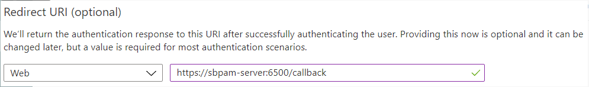
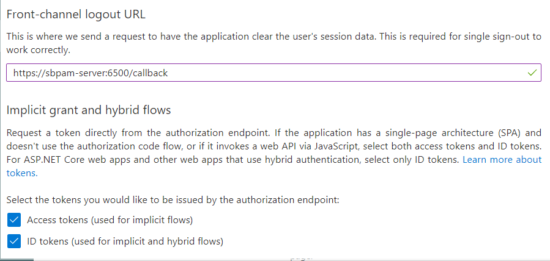
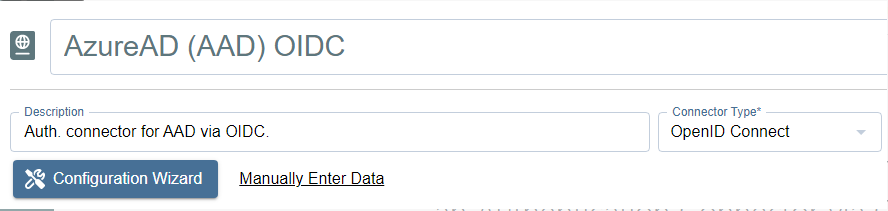
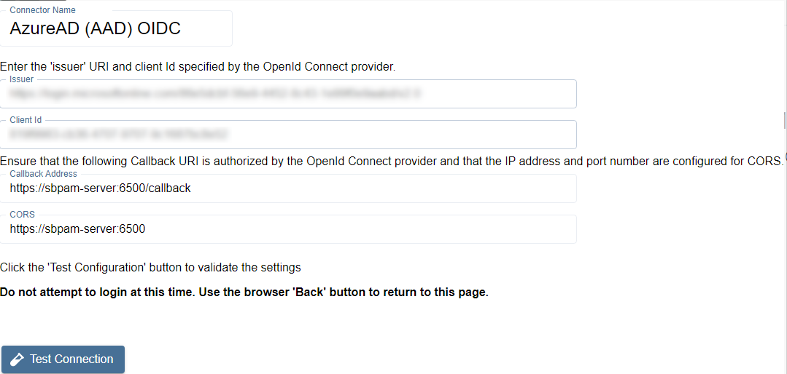
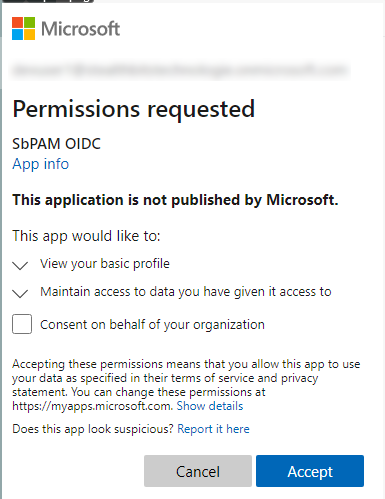
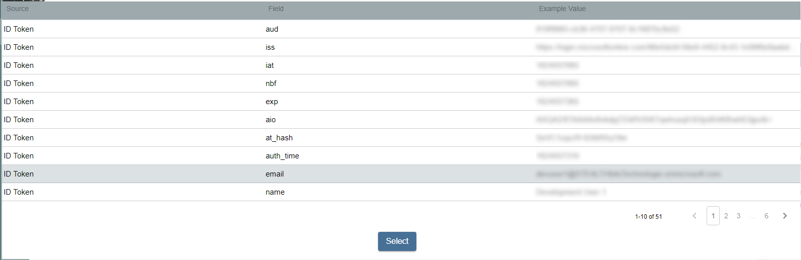
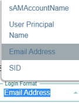
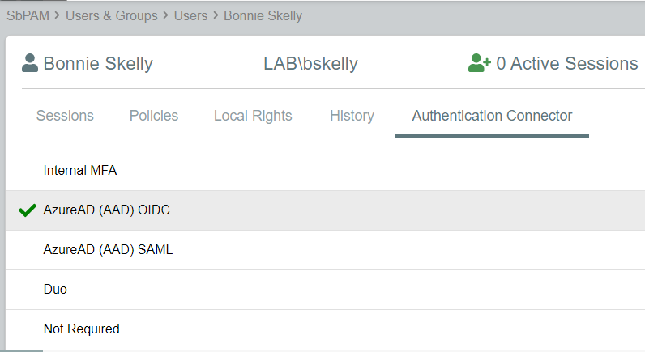
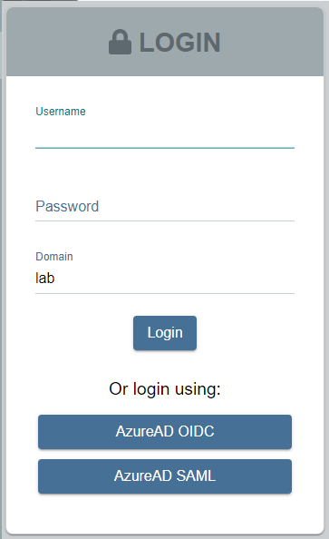

Summary
This article outlines the process of adding Microsoft Entra ID (formerly Azure AD) to Netwrix Privilege Secure as an Authentication Connector via OpenID Connect (OIDC). The article is split into two sections, Steps for Microsoft Entra ID and Steps for Netwrix Privilege Secure. The Microsoft Entra ID section must be completed first.
Instructions
Steps for Microsoft Entra ID
The following steps need to be taken in Microsoft Entra ID, as an admin, to prepare an app registration for use with Netwrix Privilege Secure.
- Navigate to https://portal.azure.com/ and sign-in to Microsoft Entra ID as an admin. You'll need to create an Enterprise Application.
- Click Azure Active Directory from the left sidebar, then click App Registrations. Next, click New Registration near the top of the page.
- Give the app any name you prefer. The only other setting that needs to be changed is the Redirect URI. It should be the following, replacing your-sbpam-server-hostname with the hostname of your Netwrix Privilege Secure server.
https://your-sbpam-server-hostname:6500/callback

- Click Register. Once app registration completes, you'll be redirected to the new app's Overview page.
- In the left sidebar, click Authentication. Scroll down and fill in the Front-channel logout URL field with the same Callback Address used in Step 3.
Also, scroll down and enable the following checkboxes:
- Access tokens (used for implicit flows)
- ID tokens (used for implicit and hybrid flows)

- Click Save at the top of the page, and return to the app's Overview page.
- Click Endpoints, near the top of the page. Copy the OpenID Connect metadata document URL and open it in a new browser tab.
This will display JSON data, which can be tough to read in raw form. To make it easier to read, consider installing a JSON browser extension such as JSON Formatter for Chromium-based browsers.
- While still viewing the JSON data, find the Issuer key and save its value (in this case it will be a URL). For example:
"issuer": "https://login.microsoftonline.com/<GUID>/v2.0"
- Close the Endpoints sidebar, and save the Application (client) ID from the Overview page.
Steps for Netwrix Privilege Secure
Once the Steps for Microsoft Entra ID have been completed, take the following steps in Netwrix Privilege Secure to add Microsoft Entra ID as an Authentication Connector via OpenID Connect (OIDC).
- As an Netwrix Privilege Secure Admin, navigate in Netwrix Privilege Secure to Configuration > Authentication, and click the green "+" button to add a new Authentication Connector.
- Give the new connector a name, description (optional), and a Connector Type of "OpenID Connect".

- Click on Configuration Wizard.
- On the wizard's Configure Client page, enter the Issuer and Client ID (from the Steps for Microsoft Entra ID) in each respective field.
 - Click Test Connection.
On the page that loads (Microsoft Entra ID sign-in page) DO NOT SIGN-IN. Instead, once you've verified that the sign-in page loaded property, click the back button in the browser to return to Netwrix Privilege Secure (the connection test was successful if Microsoft Entra ID didn't display an error). - Click Next to advance in the Authentication Connector Configuration Wizard. You'll now be on the wizard's Test Login page.
- Click Login, and log-in as any Microsoft Entra ID user (this does not need to be an admin). You'll be prompted to accept the app's requested permissions. Check Consent on behalf of your organization, and click Accept.
 - Click Next in the wizard. You will now be on the Configure Id Mapping page.
- Click Get User Data.
Netwrix Privilege Secure will use the access token to retrieve user data from the OpenID Connect provider. The OpenID Connect provider requires a User Id Field for sign in.
It is necessary to specify which field in Active Directory should map to that User Id Field, so that Netwrix Privilege Secure can automatically fill in the required credentials at login. The value provided is used to sign in to the multi factor authenticator (MFA) when a user logs in to the Netwrix Privilege Secure Console.
In order to connect a user from the OpenID Connect provider to a user in the Netwrix Privilege Secure copy of the AD data, it is necessary to map a field in the provider list to a field in the Netwrix Privilege Secure host user table. The exact fields to map will vary between providers and according to the user’s AD configuration.
The table displays the retrieved data that can be used for the host user lookup. The user must select from the displayed records a field that corresponds to a value in their AD configuration. For example, if the AD data contains email addresses, they can select any of the fields which contain email addresses.
In simple terms, there needs to be a property for each user in on-prem Active Directory and Microsoft Entra ID that matches. Often, this is an email address.
IMPORTANT: Make sure to use a field that has an ID TOKEN source, rather than ACCESS TOKEN.

Once the desired field has been found, click on it and then click Select. - You will now be back in the Authentication Connector Configuration Wizard, on the Configure Id Mapping page. Make sure the Login Format dropdown is for a format that will match the ID Token field selected from Microsoft Entra ID in the previous step.
For example, if you chose Email for the field in the previous step then this dropdown should also be Email Address.
 - Click Finish on the summary modal, and then Save for the authentication connector.
- You can now assign this authentication connector to a user via the Authentication Connector tab for a user accessed in Netwrix Privilege Secure's Users & Groups page.

Users with this authentication connector assignment can now use this authentication connector option on the Netwrix Privilege Secure log-in screen.

When using the OpenID Connect log-in option, the user will be redirected to sign-in to Microsoft Entra ID. Upon successful authentication, the user will be redirected to the Netwrix Privilege Secure UI as their now signed-in user.